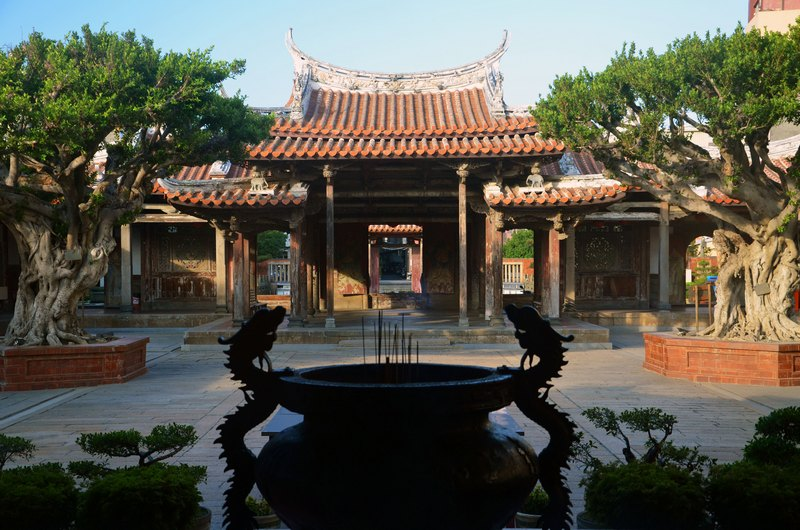
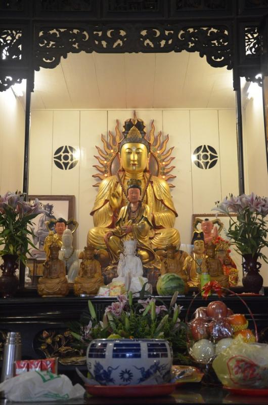
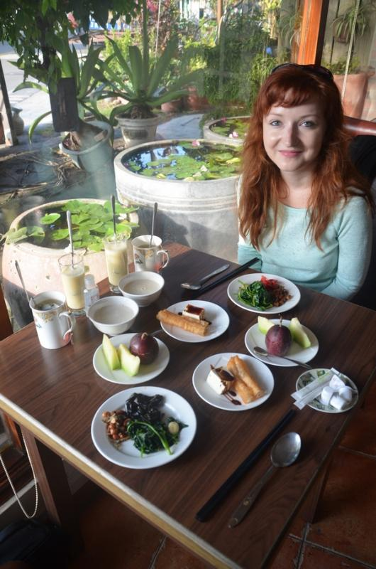
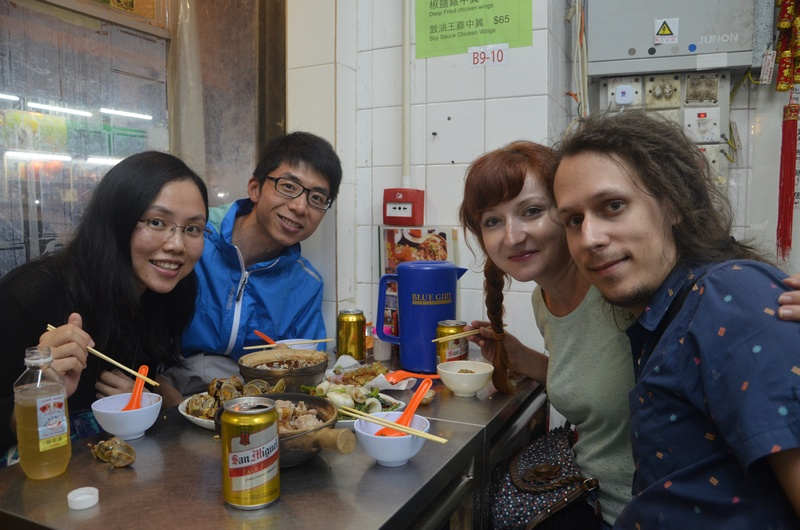
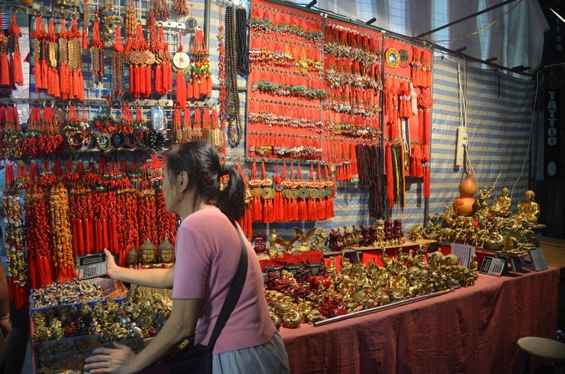

A bylo to tu! Náš poslední den na Taiwanu… Po všech těch neuvěřitelných zážitcích a krásných místech jsme měli naše putování zakončit v Lukangu. Ráno jsme si přivstali a ještě před snídaní se vydali k chrámu Longshan, který patří k největším místním zajímavostem.

Longshan Temple
Chrám byl postavený již koncem 18. století a je ukázkou taiwanského jižního chrámového stylu. Hned na první pohled se vymyká - není tak pestrý a zmodernizovaný, naopak si zachovává svůj svérázný zastaralý vzhled. Longshan tvoří rozsáhlý komplex, pokrývající 10.000 m². K nejvýraznějším zajímavostem patří přední horská brána, široké prohnuté střechy či jeden z nejhezčích štukových stropů na Taiwanu.

Uvnitř chrámu
Čas nás ale tlačil, a tak jsme se po prohlídce chrámu vydali zpátky do hotelu, kde nás čekala naše poslední taiwanská snídaně. Nic lepšího jsme si na rozloučenou ani nemohli přát. Bohatý stůl plný oříšků, sušeného masa, pikantních rybiček a čerstvého ovoce byl poslední sladkou tečkou za našim pobytem na ostrově a shodli jsme se, že to byla zároveň naše nejlepší asijská snídaně.

Snídaně na rozloučenou
Pak už nezbývalo než naložit kufry a vydat se na poslední etapu naší cesty - směr letiště v Taipei. Měli jsme štěstí, že nedaleko letiště se nacházela zároveň i pobočka naší autopůjčovny. Auto jsme tedy bez jediného škrábnutí vrátili a ještě nás odvezli i se zavazadly až k našemu terminálu. Vše jsme zvládli v dobrém čase, takže jsme se nemuseli moc stresovat, jestli nám náhodou neuletí letadlo. Nechali jsme si odbavit zavazadla a s napětím se vydali za dalším dobrodružstvím…
Let utekl přímo bleskově. Než jsem se stačila začíst do novin a sníst rozdávanou svačinku, už jsme přistávali v Hong Kongu. Na letišti, které leží na ostrově Lantau, jsme vyfasovali mapku, nechali si vysvětlit cestu do centra a pak už jen stačilo nasednout na ten správný autobus a počítat zastávky :-).
Náš airbnb byteček ležel na poměrně rušné nákupní třídě ve čtvrti Cowloon. Jeho majitelka Kelly mluvila naprosto šíleným jazykem, který se při nejlepší vůli nedal nazvat angličtinou, takže jsme se dorozumívali dost vtipně :D. Jinak jsme ale byli s našim ubytováním spokojení, takže jsme se honem převlékli a vyrazili metrem na Temple Street, kde jsme se měli setkat s Phyllis. Měli jsme trochu obavy, jestli ji po těch letech vůbec ještě poznáme, ale já ji teda poznala hned :-).
Phyllis je prostě anděl - celou dobu, kterou s námi strávila, se o nás moc hezky starala a snažila se nám ukázat co nejvíc zajímavostí, které Hong Kong nabízí. Hned první večer nás vzala na večeři do malé, ale naprosto přeplněné restaurace, kde nám představila svého kamaráda a spolužáka ze školy - Ivana. Ochutnali jsme hong kongské pivo a nad večeří, sestávající z mušlí, různé zeleniny, netypicky sladké klobásky a kuřecího masa s rýží, probrali naše dosavadní zážitky. Na stole se objevil i pověstný slepičí pařátek, ale nějak jsme na něj s Péťou neměli dost odvahy :D.

Večeře s Phyllis a Ivanem
Po večeři nám Phyllis ukázala slavný noční trh na Temple street, který je označován za nejživější noční trh v Hong Kongu. Od taiwanských nočních trhů se lišil hned na první pohled. Zatímco na Taiwanu se prodávalo převážně jídlo, tento trh byl zaměřený spíš na suvenýry - oblečení, sošky, čajové soupravy nebo hračky. Usoudili jsme, že tady asi budeme před odjezdem utrácet naše zbylé dolary :D. Na Temple Street jsme taky potkali první a poslední Čechy za celou dovolenou.

Smlouvání na Temple Street :)
Další zajímavé specifikum trhu na Temple street je ulička plná věšteckých krámků. A k našemu překvapení se tu věštci mají co ohánět - zvědavců toužících znát svůj osud je tu víc než dost. Typickým zákazníkem jsou mladé dívky, které si chodí pro svou věštbu i ve skupinkách. Hned opodál se nachází prozměnu karaoke stánky. Zpěváci se tu sice trochu přeřvávají, ale nikomu to evidentně moc nevadí :D.
Na trhu se od nás Ivan odpojil. My už jsme byli po dlouhém dni plném cestování taky celkem utahaní, ale Phyllis nám chtěla ještě ukázat svou oblíbenou cukrárnu. Na sladký já slyším vždycky a v kteroukoliv denní hodinu, takže jsme ji poslušně následovali :D. Musím vám ale říct, že to, co následovalo, byl suverénně nejhorší gastro zážitek za celou dovolenou :D! Že si v Asii zvrhle libují v želatinových kuličkách ve všem sladkém, to už jsme tak nějak vypozorovali na Taiwanu. Ovšem tekutý dezert z prášku z mořské trávy byl o dost silnějším kalibrem. Chuťově bych to přirovnala k polévce z mletého živočišného uhlí a to fakt ani moc nepřeháním :D. Ale statečně jsme to do sebe s Péťou soukali, abychom udělali Phyllis radost, protože nám chtěla dopřát něco echt asijského (a v duchu jsme jí záviděli její “evropskou” zmrzlinu, kterou si objednala :D).
Na druhý den nás čekala další spousta zážitků s Phyllis a s jejím přítelem Longem, kteří se stali našimi průvodci, ale o tom budu vyprávět zase jindy ;-).